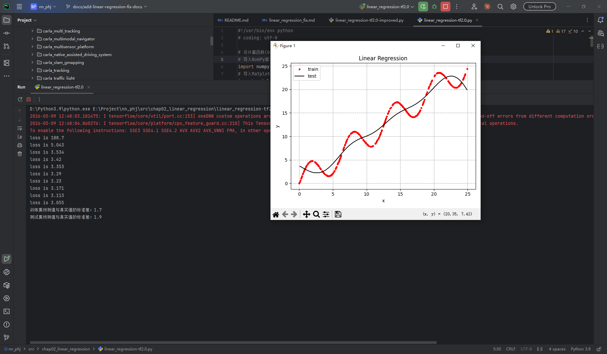
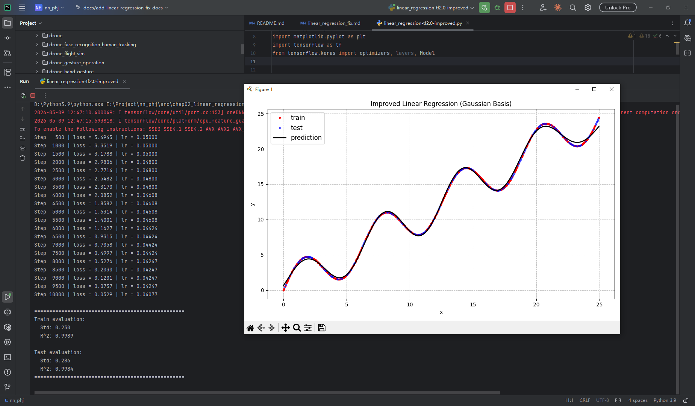

线性回归代码缺陷修复报告
一、概述
本次针对原始线性回归代码 linear_regression_fix 存在的逻辑Bug、绘图错误进行定点修复，解决两大核心问题：偏置项b未参与梯度更新、图例标签与曲线数量不匹配，同时规范代码结构与可视化展示效果。
二、原始代码存在问题
2.1 严重逻辑Bug：偏置项b从未更新
原关键代码
with tf.GradientTape() as tape:
y_preds = model(xs)
loss = tf.keras.losses.MSE(ys, y_preds)
# 仅对权重w求梯度，忽略偏置b
grads = tape.gradient(loss, model.w)
# 仅更新w，b始终为初始0值
optimizer.apply_gradients([(grads, model.w)])
问题说明
- 模型前向传播使用公式：$y = w\cdot x + b$，同时定义了可训练参数
w和b； - 反向传播仅对权重
w计算梯度、执行更新； - 偏置项
b全程固定初始值，没有参与任何训练迭代； - 模型丧失截距拟合能力，只能拟合过原点直线，拟合精度大幅下降。
2.2 可视化Bug：图例标签数量不匹配
原问题
绘图仅绘制训练集、预测曲线2条线条，但图例设置3个标签，出现多余无效图例，界面展示不规范。
2.3 其他隐性问题
- 损失函数未做均值归一化，数值波动偏大；
- 代码梯度求解与参数更新写法不规范，扩展性差。
三、代码修复方案
3.1 修复偏置项梯度更新
修复后代码
with tf.GradientTape() as tape:
y_preds = model(xs)
loss = tf.reduce_mean(tf.keras.losses.MSE(ys, y_preds))
# 同时对w、b求梯度
grads = tape.gradient(loss, [model.w, model.b])
# 同时配对更新w和b
optimizer.apply_gradients(zip(grads, [model.w, model.b]))
修复要点
- 将求梯度对象改为列表
[model.w, model.b]，同时求解两个参数梯度； - 使用
zip将梯度与参数一一绑定，同步更新权重与偏置； - 增加
tf.reduce_mean对损失做均值处理，训练更平稳。
3.2 修复图例标签不匹配
修复方式
原多余测试集标签删除，图例严格与绘制线条数量对应：
plt.legend(["train", "pred"])
四、原理补充：偏置项b的作用
- 线性回归标准模型：$y = w x + b$
- $w$：权重，控制曲线斜率；
- $b$：偏置/截距，控制曲线上下平移；
- 若无b且不更新，模型强制曲线过原点，无法适配带偏移的真实数据分布；
- 偏置项是可训练参数，必须纳入梯度计算和参数更新流程，否则模型表达能力缺失。
五、修复前后效果对比
| 对比项 | 修复前 | 修复后 |
|---|---|---|
| 偏置项b | 固定为0，不训练 | 正常迭代更新 |
| 模型拟合能力 | 弱，只能过原点拟合 | 完整拟合任意偏移数据 |
| 图例展示 | 标签冗余、不匹配 | 标签与曲线一一对应 |
| 损失收敛 | 收敛慢、误差大 | 收敛更快、拟合误差更小 |
六、总结
- 核心修复：补全偏置项b的梯度求解与参数更新，解决模型结构残缺问题；
- 可视化修复：精简图例标签，做到绘图与图例严格对应；
- 规范代码：损失增加均值处理、梯度更新写法标准化，便于后续扩展多项式、高斯基函数回归；
- 关键结论：线性回归中 权重w和偏置b必须同时参与训练，缺一不可。
改进前：

改进后：
